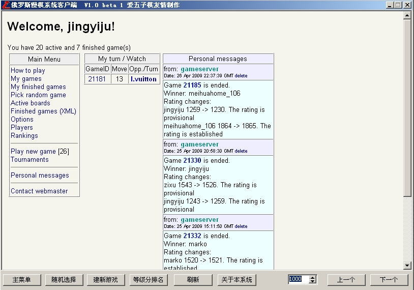

俄罗斯慢棋系统客户端[090426升级版]
首页
五子棋软件
#1 <font color="red">俄罗斯慢棋系统客户端[090426升级版]</font> 作者：小丸.net 发表时间：2009-4-24 20:59:26
自己感觉每天访问网页不方便，随手写了一个简单的，满好用的，单个文件，很小。

 俄罗斯慢棋系统升级.rar
俄罗斯慢棋系统升级.rar
做得很简单，不要嫌弃。。。在上面注册一个帐号，就可以下棋，也可以点上一个和下一个浏览棋谱。
#2 Re:俄罗斯慢棋系统客户端 作者：失落刀 发表时间：2009-4-24 21:02:48
有人愿意写一个俄罗斯慢棋使用的简单中文使用说明吗？
不会用不会注册，因为看不懂外语。
#3 Re:俄罗斯慢棋系统客户端 作者：小红眼镜 发表时间：2009-4-24 21:14:23
 谢谢丸子~
谢谢丸子~
#4 Re:Re:俄罗斯慢棋系统客户端 作者：nara 发表时间：2009-4-24 21:55:04
引用：
原文由 失落刀 发表于 2009-4-24 21:02:48 :
有人愿意写一个俄罗斯慢棋使用的简单中文使用说明吗？
不会用不会注册，因为看不懂外语。
不需要注册的，直接输入用户名和密码就可以下棋！
#5 Re:俄罗斯慢棋系统客户端 作者：nara 发表时间：2009-4-24 21:58:22
谢谢丸子的好东西，丸子能写个可以收集上面所有棋局的程序吗？它自身提供的下载，个人觉得不是很好！
#6 Re:俄罗斯慢棋系统客户端 作者：小丸.net 发表时间：2009-4-24 22:14:35
http://www.renju.net.ru/games.xml.gz 点这里下载
#7 Re:俄罗斯慢棋系统客户端 作者：nara 发表时间：2009-4-24 22:28:00
不是这个，而且这个不全，我记得以前我下到过.lib格式的！现在没有了！
Renju_Offline_Classic.lib
Renju_Offline_Classic_All_games.lib
Renju_Offline_Classic_Best_games.lib
Renju_Offline_All_rules.lib
。。。。。。
#8 Re:俄罗斯慢棋系统客户端 作者：淡红的秋樱 发表时间：2009-4-24 23:14:12
30天一更新。如果要快的话。自己搜集。
#9 Re:俄罗斯慢棋系统客户端[090426升级版] 作者：极地剑客 发表时间：2009-4-28 12:16:43
小丸能做个俄罗斯慢棋LIB收集程序就强悍了~
#10 Re:俄罗斯慢棋系统客户端[090426升级版] 作者：极地剑客 发表时间：2009-5-22 17:07:24
淡红的秋樱是强淫啊~